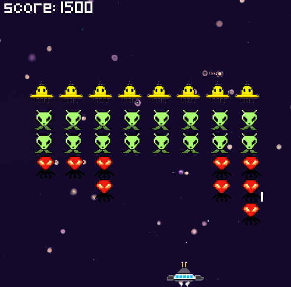
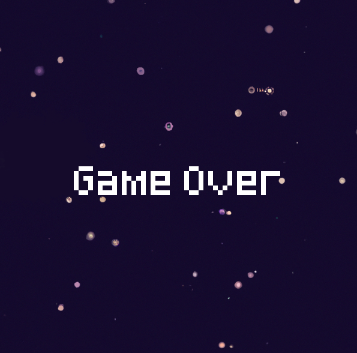

Welcome to the Python Space Invaders Game! In this classic game, you control a spaceship and your goal is to destroy as many aliens as possible without being hit by their bullets. The game was developed using Pygame, a popular Python library for creating games, and features smooth gameplay and increasing difficulty as you progress. Are you ready to become the ultimate space invader destroyer?
How to Play
To play the Python Space Invaders Game, use the left and right arrow keys on your keyboard to control the movement of your spaceship and the space bar to shoot bullets. You have a limited number of lives, so make sure to aim carefully and avoid getting hit by the alien ships' bullets. Can you beat the game?
How does it work?
The create_obstacle function takes in a starting x and y position and an offset value, and it creates a group of blocks based on the self.shape attribute (which is a list of lists containing 'x' and ' ' characters). The create_multiple_obstacles function calls the create_obstacle function multiple times with different offset values. The alien_setup function creates a group of aliens with different colors and positions based on the number of rows and columns specified. The alien_movement function moves the aliens in a certain direction and changes the direction if the aliens reach the edge of the screen. The extra_spawn function randomly creates an Extra sprite (which is a special alien that gives the player bonus points when destroyed). The check_collisions function checks if any bullets have hit any aliens or obstacles and removes them if necessary. The update_lives function updates the player's lives if they are hit by an alien's bullet or collide with an alien. The update_score function updates the player's score if they destroy an alien or Extra. The game loop constantly updates the screen, handles player input, moves the aliens and player, and checks for collisions. If the player runs out of lives or destroys all the aliens, the game ends.
Download and Play
To download and play the Python Space Invaders Game, simply click the button below. The game is free to download and play on Windows, Mac, and Linux. Have fun!